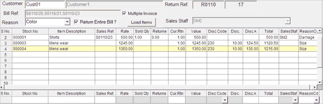

The detail part of the sales return document is displayed.

Item Details Grid
The item details like stock number, item description, rate, value, discount details and total amount and so on captured during billing, of each item in the bill/(s) selected for return/ exchange are displayed in this grid.
Additionally, if you want to add some more items to the item details grid, you can do the same by directly scanning the stock item in the direct entry grid. Click here to know how to select the required item.
Note: In the item details grid, the Sales Ref. field of the items that are returned without references are blank.
For each item displayed in the item details grid, the following are the details specific to return/ exchange.
Sold Qty: The total quantity of the item billed at the time of billing, is displayed.
Returned Qty: If the item has already been subjected to one or more returns earlier, the quantity returned so far is displayed.
Cur. Returned Qty.: The current return quantity displayed for the items differs based on the selection of the option Return Entire Bill in the header part of the sales return document.
if the option Return Entire Bill is selected, then the total sold quantity of the items as per the selected bill/(s) are displayed as the current return quantity. You can edit the quantity, if the quantity of the item to be returned is different.
if the option Return Entire Bill is not selected, then the current return quantity of the items will be displayed as zero. Here, you can edit the quantity of the items to be returned. This facility is very useful if there are only few items are to be returned from a long list of items billed in the selected bill/(s).
Reason Cd: The reason for the return selected at the header level, is displayed by default. Edit the reason, if the reason for the return/ exchange of the item is different from the default.
Note: By double clicking on any of the items present in the Item Details grid, the item is brought to the Direct Entry grid where it can be edited as required. To delete any item from the Item details grid, you have to select the item by clicking and then press Ctrl+D when it is highlighted.
Note: While returning items, any Add-ons/ Deductions applied at the time of billing will not be considered (reflected). If you want to consider the Add-ons/ Deductions during return, you have to apply it in the sales return document.
Ctrl+4: To make AddOns And Deductions.